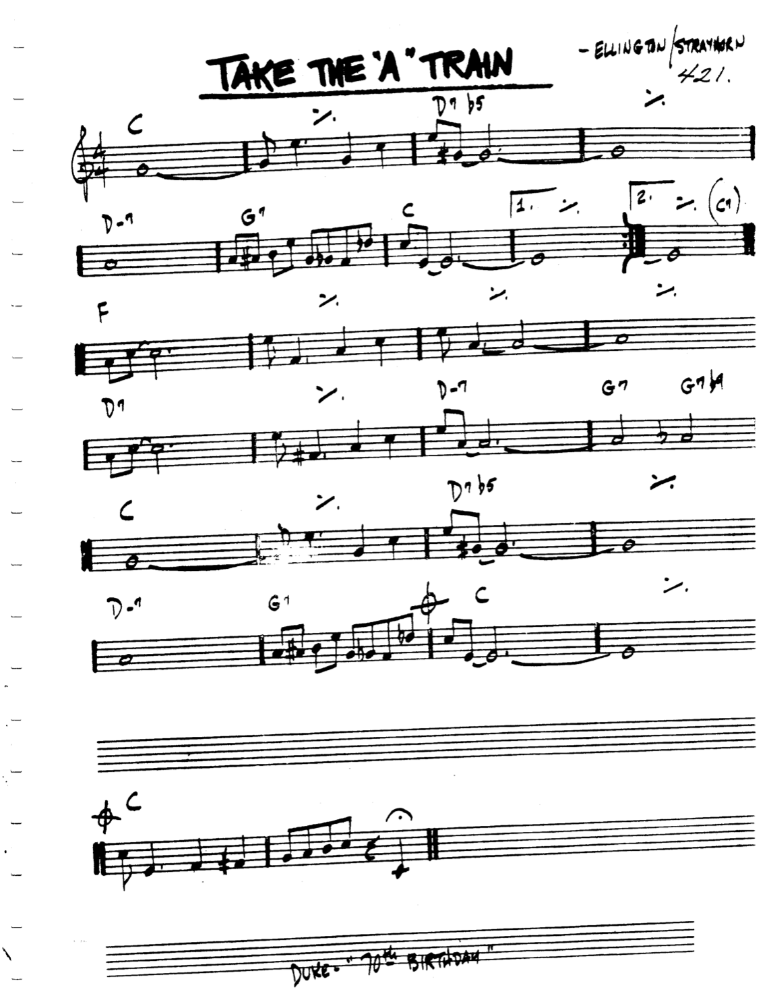

Scale degrees are a method of indexing a scale. Normally the scale we index is the major scale.
Let's say we wanted to enumerate the C major scale, then what we would do is this
| Scale |
C | D | E | F | G | A | B | C | D | E | F | G | A | B | C |
|---|---|---|---|---|---|---|---|---|---|---|---|---|---|---|---|
| Index |
1 | 2 | 3 | 4 | 5 | 6 |
7 | 8 | 9 | 10 |
11 | 12 |
13 | 14 | 15 |
The convention is normally that we are referencing a major scale unless specified otherwise.
This process also works just fine on any other major scale, so we could take the F# major scale like this
| Scale |
F# |
G# |
A# |
B |
C# |
D# |
F | F# | G# |
A# |
B |
C# |
D# |
F |
F# |
|---|---|---|---|---|---|---|---|---|---|---|---|---|---|---|---|
| Index |
1 | 2 | 3 | 4 | 5 | 6 |
7 | 8 | 9 | 10 |
11 | 12 |
13 | 14 | 15 |
If you recall, in the anchor system, the way we think about scales is a little differently, we're able to think about any major scale by simply remembering the pattern 0 2 4 5 7 9 11, and starting on different positions on the neck.
Now if we were to do the same thing as we've done above but for our notation we would get something like this
| Scale |
0 |
2 | 4 |
5 |
7 |
9 |
11 |
0 |
2 |
4 | 5 |
7 |
9 |
11 |
0 |
|---|---|---|---|---|---|---|---|---|---|---|---|---|---|---|---|
| Index |
1 | 2 | 3 | 4 | 5 | 6 |
7 | 8 | 9 | 10 |
11 | 12 |
13 | 14 | 15 |
You can see that this starts to get a little confusing, as the index is a number and the way we reference our note is a number (anchor interval).
Over time you will be able to make this distinction yourself, for now we will italicize the index numbers so that we can differentiate. So we know that 5 is an anchor interval and 5 is an index which references the anchor interval 7.
Let's say we saw a chord which was a G7 9 while our anchor note is C, the way we could make sense of this is first by inspecting the quality which is dom7, defining the distances of 0 4 7 10, in a chord when we see a number after the quality it is referencing the enumeration system we've come up with in the previous section. So the chord would really look like G7 9 (with the italic) if we didn't want it to be confusing at all.
Now if we reference our table we can see that 9 references the anchor interval 2, and so we just add this to the distances defined by our quality, so dom7 9 defines the quality 0 4 7 10 2, then we can stack that onto 7 (the anchor interval of G) and get 7 11 2 5 9, then construct it on the guitar.
We'll pull an example from the this tune, and see how we can make sense of it. We can see that the second chord is D7b5, breaking this apart we can see that we first have a D7 chord, if we inspect the quality we know that it is a dominant 7th chord, and therefore is defined by the distances 0 4 7 10.
Taking a look at the b5, we will go to our enumeration system